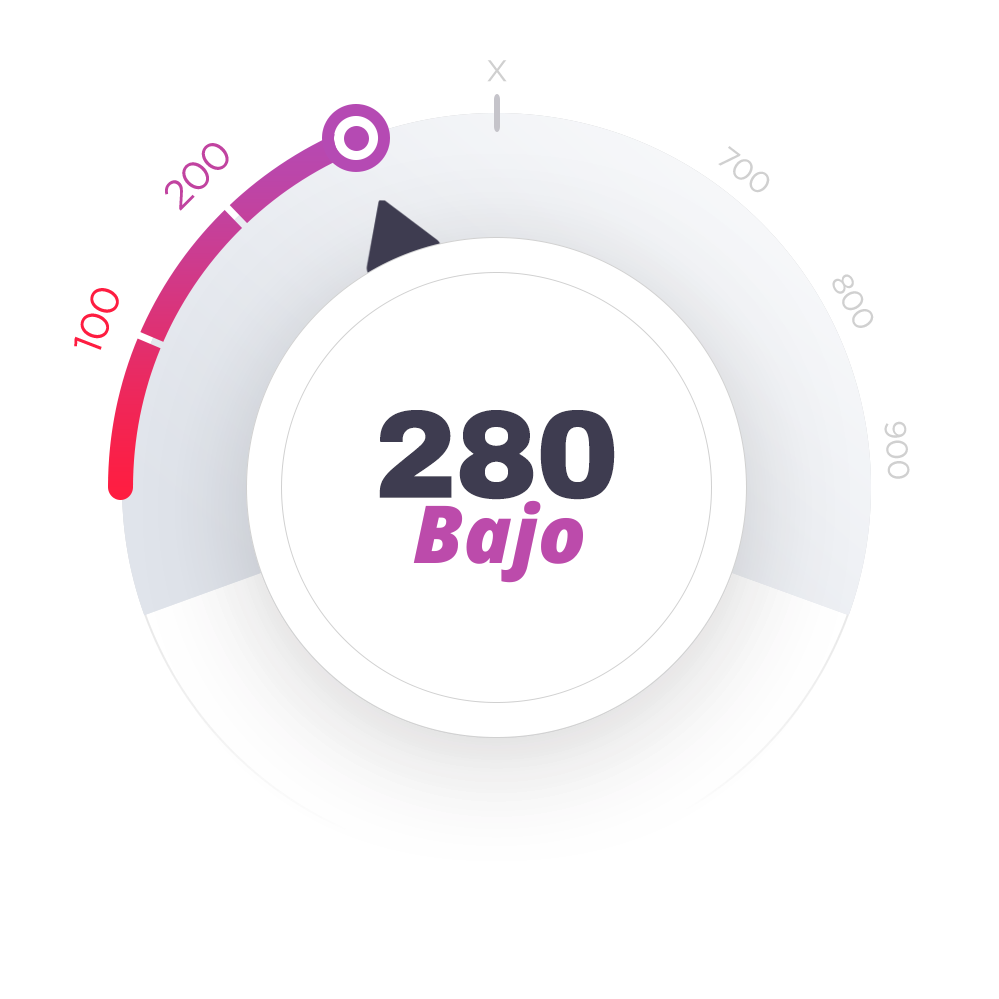

Aviso de Privacidad: Las respuestas de este cuestionario son 100 % anónimas y confidenciales.
Aviso de Privacidad: Las respuestas de este cuestionario son 100 % anónimas y confidenciales.
La duración de tu relación sexual está directamente ligada a la fuerza de estos músculos. Fortalecerlos es esencial para retrasar la eyaculación y prolongar el tiempo en la cama a tu gusto.
Aviso de Privacidad: Las respuestas de este cuestionario son 100 % anónimas y confidenciales.
Un suelo pélvico fortalecido es clave para una erección saludable. Al aprender a controlarlo, aumentas el flujo sanguíneo al pene y mejoran las erecciones.
Aviso de Privacidad: Las respuestas de este cuestionario son 100 % anónimas y confidenciales.
Aviso de Privacidad: Las respuestas de este cuestionario son 100 % anónimas y confidenciales.
Primera fase del diagnóstico:
Aviso de Privacidad: Las respuestas de este cuestionario son 100 % anónimas y confidenciales.
Aviso de Privacidad: Las respuestas de este cuestionario son 100 % anónimas y confidenciales.
Aviso de Privacidad: Las respuestas de este cuestionario son 100 % anónimas y confidenciales.
Este método ha ayudado a miles de hombres a prolongar significativamente el tiempo de sus relaciones, mejorando su vida íntima incluso con el paso de los años.
Aviso de Privacidad: Las respuestas de este cuestionario son 100 % anónimas y confidenciales.
Aviso de Privacidad: Las respuestas de este cuestionario son 100 % anónimas y confidenciales.
“Noté los primeros resultados significativos en solo 4 semanas y ahora no quiero parar. ¡No recuerdo la última vez que disfruté tanto mi vida íntima!”
— Miguel Barajas
Aviso de Privacidad: Las respuestas de este cuestionario son 100 % anónimas y confidenciales.
Aviso de Privacidad: Las respuestas de este cuestionario son 100 % anónimas y confidenciales.
Aviso de Privacidad: Las respuestas de este cuestionario son 100 % anónimas y confidenciales.
Aviso de Privacidad: Las respuestas de este cuestionario son 100 % anónimas y confidenciales.
Aviso de Privacidad: Las respuestas de este cuestionario son 100 % anónimas y confidenciales.
Un enfoque sin fármacos que ofrece beneficios reales.
Aviso de Privacidad: Las respuestas de este cuestionario son 100 % anónimas y confidenciales.
Aviso de Privacidad: Las respuestas de este cuestionario son 100 % anónimas y confidenciales.
Aviso de Privacidad: Las respuestas de este cuestionario son 100 % anónimas y confidenciales.
Aviso de Privacidad: Las respuestas de este cuestionario son 100 % anónimas y confidenciales.
Aviso de Privacidad: Las respuestas de este cuestionario son 100 % anónimas y confidenciales.
Aviso de Privacidad: Las respuestas de este cuestionario son 100 % anónimas y confidenciales.
✔️El PROTOCOLO VITAMAX fue desarrollado por expertos reconocidos en salud sexual masculina.
✔️Basado en técnicas científicamente comprobadas, incluye además consejos prácticos de coaches sexuales altamente calificados.
✔️Miles de hombres en todo el mundo ya transformaron su vida sexual con este método.
✔️Todos los programas son totalmente personalizados y se ajustan a TUS objetivos específicos.
✔️Solo 5 minutos al día son suficientes para empezar a ver resultados.
✔️¡Entrena en cualquier lugar — en casa, en el trabajo o incluso mientras caminas!
✔️Los ejercicios son discretos; nadie notará que los estás practicando.
✔️El programa evoluciona a diario siguiendo tu progreso.
✔️Incluye teoría, prácticas, ejercicios, cursos especializados y un plan diario paso a paso para alcanzar tus objetivos.
✔️El 75 % de los usuarios nota los primeros resultados en menos de 4 semanas.
Esta puntuación es una herramienta interactiva de autoevaluación que te indica tu estado actual basado en tus respuestas.
Parece haber signos de desequilibrio hormonal. Reportaste una disminución significativa en tu desempeño sexual y poca actividad física, lo que puede impactar directamente tus niveles de testosterona.
Reportaste dificultades ocasionales para mantener una erección completa y una corta duración de las relaciones, lo que indica baja sensibilidad sexual y posible disfunción eréctil leve. Esto puede estar influenciado por factores físicos (flujo sanguíneo insuficiente) y psicológicos.
Indicaste que no entrenas los músculos del suelo pélvico y no conocías su importancia. Estos músculos son esenciales para el control de la eyaculación y la calidad de las erecciones. Su debilidad puede provocar eyaculación precoz y dificultad para mantener la erección.
Tus niveles de estrés y ansiedad son elevados. El impacto emocional, incluida la ansiedad de desempeño, es una de las causas más comunes de problemas sexuales como disfunción eréctil y eyaculación precoz. El estrés crónico también está relacionado con la disminución de la libido.
Tu diagnóstico indica varios problemas que están afectando tu salud sexual.
Estás en una situación crítica y, si no tomas medidas inmediatas, estos problemas pueden agravarse, provocando consecuencias graves como disfunción eréctil permanente, fuerte disminución de la libido e incluso pérdida total de control durante el sexo.
RECUPERA TU